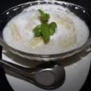
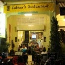
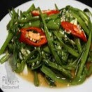

Father's Restaurant
www.fathersrestaurant.com
Khmer Food had been considered as a country’s heart and soul could be found in its kitchen or, may be you are more familiar with the popular idiom, ‘You are what you eat’. Both ring true regarding Cambodia’s gastronomic patterns.
With a local rate and simple atmosphere location in Siem Reap city, Father's Restaurant is the only place to serve you tasty authentic khmer food. There are many options of traditional dishe, appetizer, main course, soup, hot pot, dessert which is made by a royal khmer chef from many years of experience in Khmer kitchen.



Khmer Food had been considered as a country’s heart and soul could be found in its kitchen or, may be you are more familiar with the popular idiom, ‘You are what you eat’. Both ring true regarding Cambodia’s gastronomic patterns.
With a local rate and simple atmosphere location in Siem Reap city, Father's Restaurant is the only place to serve you tasty authentic khmer food. There are many options of traditional dishe, appetizer, main course, soup, hot pot, dessert which is made by a royal khmer chef from many years of experience in Khmer kitchen.